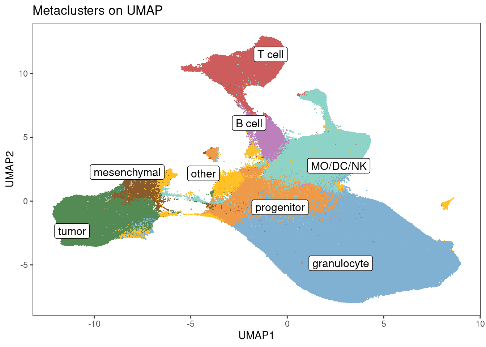
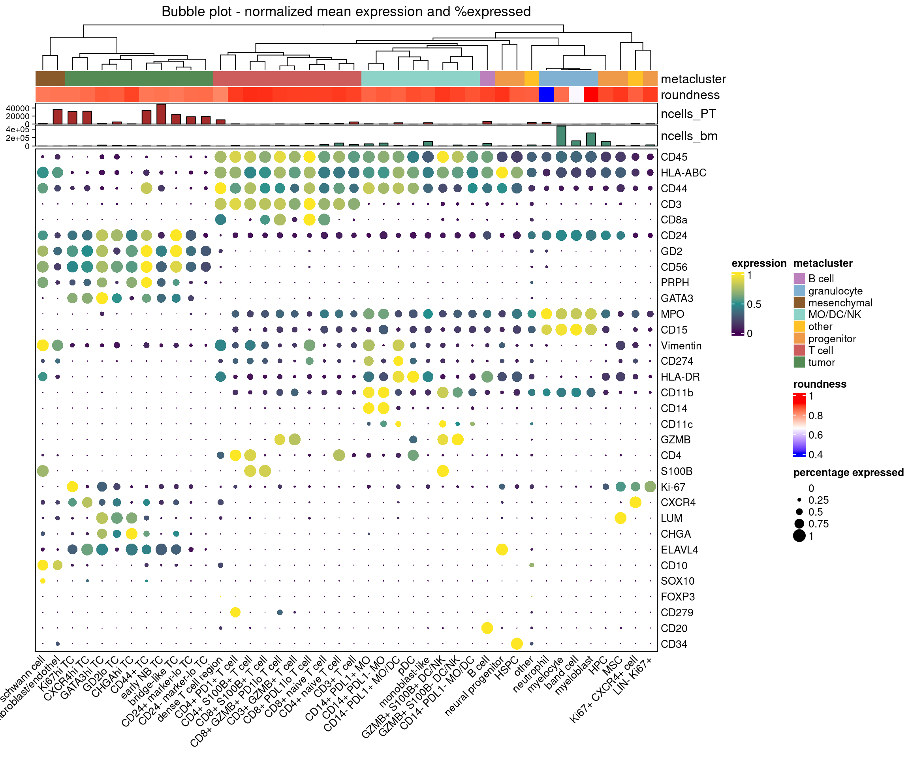

Cell phenotyping
LazDaria
2024-03-27
Last updated: 2024-03-27
Checks: 6 1
Knit directory: MapMetSC/
This reproducible R Markdown analysis was created with workflowr (version 1.7.1). The Checks tab describes the reproducibility checks that were applied when the results were created. The Past versions tab lists the development history.
The R Markdown file has unstaged changes. To know which version of
the R Markdown file created these results, you’ll want to first commit
it to the Git repo. If you’re still working on the analysis, you can
ignore this warning. When you’re finished, you can run
wflow_publish to commit the R Markdown file and build the
HTML.
Great job! The global environment was empty. Objects defined in the global environment can affect the analysis in your R Markdown file in unknown ways. For reproduciblity it’s best to always run the code in an empty environment.
The command set.seed(20240314) was run prior to running
the code in the R Markdown file. Setting a seed ensures that any results
that rely on randomness, e.g. subsampling or permutations, are
reproducible.
Great job! Recording the operating system, R version, and package versions is critical for reproducibility.
Nice! There were no cached chunks for this analysis, so you can be confident that you successfully produced the results during this run.
Great job! Using relative paths to the files within your workflowr project makes it easier to run your code on other machines.
Great! You are using Git for version control. Tracking code development and connecting the code version to the results is critical for reproducibility.
The results in this page were generated with repository version d395888. See the Past versions tab to see a history of the changes made to the R Markdown and HTML files.
Note that you need to be careful to ensure that all relevant files for
the analysis have been committed to Git prior to generating the results
(you can use wflow_publish or
wflow_git_commit). workflowr only checks the R Markdown
file, but you know if there are other scripts or data files that it
depends on. Below is the status of the Git repository when the results
were generated:
Unstaged changes:
Modified: analysis/04_phenotyping.Rmd
Note that any generated files, e.g. HTML, png, CSS, etc., are not included in this status report because it is ok for generated content to have uncommitted changes.
These are the previous versions of the repository in which changes were
made to the R Markdown (analysis/04_phenotyping.Rmd) and
HTML (docs/04_phenotyping.html) files. If you’ve configured
a remote Git repository (see ?wflow_git_remote), click on
the hyperlinks in the table below to view the files as they were in that
past version.
| File | Version | Author | Date | Message |
|---|---|---|---|---|
| Rmd | d395888 | LazDaria | 2024-03-27 | 04_phenotyping.Rmd |
| Rmd | 4ba0e1a | LazDaria | 2024-03-27 | update |
Cell phenotyping
In this Rmd file, we will perform 1. dimensionality reduction 2. phenograph clustering 3. annotate and merge clusters & metaclusters externally 4. retrieve tumor cells from GD2-MPO double positive cells (caused by spillover) 5. re-classify granulocyte metaclusters into maturity states based on morphology 6. define color codes for all celltypes and metaclusters
Load libraries
Load libraries
library(ComplexHeatmap)Loading required package: grid========================================
ComplexHeatmap version 2.12.1
Bioconductor page: http://bioconductor.org/packages/ComplexHeatmap/
Github page: https://github.com/jokergoo/ComplexHeatmap
Documentation: http://jokergoo.github.io/ComplexHeatmap-reference
If you use it in published research, please cite either one:
- Gu, Z. Complex heatmaps reveal patterns and correlations in multidimensional
genomic data. Bioinformatics 2016.
- Gu, Z. Complex Heatmap Visualization. iMeta 2022.
The new InteractiveComplexHeatmap package can directly export static
complex heatmaps into an interactive Shiny app with zero effort. Have a try!
This message can be suppressed by:
suppressPackageStartupMessages(library(ComplexHeatmap))
========================================library(RColorBrewer)
library(viridis)Loading required package: viridisLitelibrary(scater)Loading required package: SingleCellExperimentLoading required package: SummarizedExperimentLoading required package: MatrixGenericsLoading required package: matrixStats
Attaching package: 'MatrixGenerics'The following objects are masked from 'package:matrixStats':
colAlls, colAnyNAs, colAnys, colAvgsPerRowSet, colCollapse,
colCounts, colCummaxs, colCummins, colCumprods, colCumsums,
colDiffs, colIQRDiffs, colIQRs, colLogSumExps, colMadDiffs,
colMads, colMaxs, colMeans2, colMedians, colMins, colOrderStats,
colProds, colQuantiles, colRanges, colRanks, colSdDiffs, colSds,
colSums2, colTabulates, colVarDiffs, colVars, colWeightedMads,
colWeightedMeans, colWeightedMedians, colWeightedSds,
colWeightedVars, rowAlls, rowAnyNAs, rowAnys, rowAvgsPerColSet,
rowCollapse, rowCounts, rowCummaxs, rowCummins, rowCumprods,
rowCumsums, rowDiffs, rowIQRDiffs, rowIQRs, rowLogSumExps,
rowMadDiffs, rowMads, rowMaxs, rowMeans2, rowMedians, rowMins,
rowOrderStats, rowProds, rowQuantiles, rowRanges, rowRanks,
rowSdDiffs, rowSds, rowSums2, rowTabulates, rowVarDiffs, rowVars,
rowWeightedMads, rowWeightedMeans, rowWeightedMedians,
rowWeightedSds, rowWeightedVarsLoading required package: GenomicRangesLoading required package: stats4Loading required package: BiocGenerics
Attaching package: 'BiocGenerics'The following objects are masked from 'package:stats':
IQR, mad, sd, var, xtabsThe following objects are masked from 'package:base':
anyDuplicated, append, as.data.frame, basename, cbind, colnames,
dirname, do.call, duplicated, eval, evalq, Filter, Find, get, grep,
grepl, intersect, is.unsorted, lapply, Map, mapply, match, mget,
order, paste, pmax, pmax.int, pmin, pmin.int, Position, rank,
rbind, Reduce, rownames, sapply, setdiff, sort, table, tapply,
union, unique, unsplit, which.max, which.minLoading required package: S4Vectors
Attaching package: 'S4Vectors'The following objects are masked from 'package:base':
expand.grid, I, unnameLoading required package: IRangesLoading required package: GenomeInfoDbLoading required package: BiobaseWelcome to Bioconductor
Vignettes contain introductory material; view with
'browseVignettes()'. To cite Bioconductor, see
'citation("Biobase")', and for packages 'citation("pkgname")'.
Attaching package: 'Biobase'The following object is masked from 'package:MatrixGenerics':
rowMediansThe following objects are masked from 'package:matrixStats':
anyMissing, rowMediansLoading required package: scuttleLoading required package: ggplot2library(BiocParallel)
library(Rphenoannoy)Loading required package: igraph
Attaching package: 'igraph'The following object is masked from 'package:scater':
normalizeThe following object is masked from 'package:GenomicRanges':
unionThe following object is masked from 'package:IRanges':
unionThe following object is masked from 'package:S4Vectors':
unionThe following objects are masked from 'package:BiocGenerics':
normalize, path, unionThe following objects are masked from 'package:stats':
decompose, spectrumThe following object is masked from 'package:base':
unionLoading required package: Matrix
Attaching package: 'Matrix'The following object is masked from 'package:S4Vectors':
expandlibrary(tidyr)
Attaching package: 'tidyr'The following objects are masked from 'package:Matrix':
expand, pack, unpackThe following object is masked from 'package:igraph':
crossingThe following object is masked from 'package:S4Vectors':
expandlibrary(tidyHeatmap)========================================
tidyHeatmap version 1.8.1
If you use tidyHeatmap in published research, please cite:
1) Mangiola et al. tidyHeatmap: an R package for modular heatmap production
based on tidy principles. JOSS 2020.
2) Gu, Z. Complex heatmaps reveal patterns and correlations in multidimensional
genomic data. Bioinformatics 2016.
This message can be suppressed by:
suppressPackageStartupMessages(library(tidyHeatmap))
========================================
Attaching package: 'tidyHeatmap'The following object is masked from 'package:stats':
heatmaplibrary(bruceR)
bruceR (v2023.9)
Broadly Useful Convenient and Efficient R functions
Packages also loaded:
✔ data.table ✔ emmeans
✔ dplyr ✔ lmerTest
✔ tidyr ✔ effectsize
✔ stringr ✔ performance
✔ ggplot2 ✔ interactions
Main functions of `bruceR`:
cc() Describe() TTEST()
add() Freq() MANOVA()
.mean() Corr() EMMEANS()
set.wd() Alpha() PROCESS()
import() EFA() model_summary()
print_table() CFA() lavaan_summary()
For full functionality, please install all dependencies:
install.packages("bruceR", dep=TRUE)
Online documentation:
https://psychbruce.github.io/bruceR
To use this package in publications, please cite:
Bao, H.-W.-S. (2023). bruceR: Broadly useful convenient and efficient R functions (Version 2023.9) [Computer software]. https://CRAN.R-project.org/package=bruceRlibrary(dittoSeq)
library(dplyr)
library(mclust)Package 'mclust' version 6.0.1
Type 'citation("mclust")' for citing this R package in publications.library(SingleR)
library(circlize)========================================
circlize version 0.4.15
CRAN page: https://cran.r-project.org/package=circlize
Github page: https://github.com/jokergoo/circlize
Documentation: https://jokergoo.github.io/circlize_book/book/
If you use it in published research, please cite:
Gu, Z. circlize implements and enhances circular visualization
in R. Bioinformatics 2014.
This message can be suppressed by:
suppressPackageStartupMessages(library(circlize))
========================================
Attaching package: 'circlize'The following object is masked from 'package:igraph':
degreeRead data
We will first read the data that passed the second quality control step and save the count data as a matrix. Low-quality markers (low SNR in a lot of samples) as well as all IF and nuclear IMC markers will be excluded for clustering. Moreover, mean intensity will be used to represent marker expression, to average out the signals arising from lateral spillover or artifacts. As explained in the previous chapter, we are using counts measured with respect to dilated masks in downstream analysis do capture membrane signal.
spe <- readRDS(file.path(params$output,"spe_qc2.rds"))
intensity_mat <- assay(spe, "counts")Loading required package: SpatialExperimentcolnames(intensity_mat) <- colnames(spe)
#use mean intensity
intensity_mat <- intensity_mat[!grepl("mean-80", rownames(intensity_mat)),]
#exclude low-quality markers and functional marker cl.PARP
intensity_mat_hq <- intensity_mat[!grepl("PARP|IDO|DAPI|IF2_GD2|IF3_CD45/56|DNA1|H4K12Ac|H3K9Ac|CXCR2|PNMT|Fibro", rownames(intensity_mat)),]
intensity_mat_lq <- intensity_mat[grepl("PARP|IDO|DAPI|IF2_GD2|IF3_CD45/56|DNA1|H4K12Ac|H3K9Ac|CXCR2|PNMT|Fibro", rownames(intensity_mat)),]
non_zeros <- as.logical(colSums(intensity_mat_hq)!=0)
intensity_mat_hq_wo_zeros <- intensity_mat_hq[,non_zeros]
intensity_mat_lq_wo_zeros <- intensity_mat_lq[,non_zeros]
#Apply changes to SPE object
spe <- spe[,non_zeros]
rowData(spe)$use_channel <- !grepl("mean-80|PARP|IDO|DAPI|IF2_GD2|IF3_CD45/56|DNA1|H4K12Ac|H3K9Ac|CXCR2|PNMT|Fibro", rownames(spe))
##Matrix with morph. features
morph_mat_clipped <- (cbind("area"=spe$area_clipped, "solidity"=spe$solidity_clipped, "aspect_ratio"=spe$aspect_ratio_clipped))
tissue <- spe$tissue
cell_id <- colnames(spe)We are excluding 1997 more cells here, as they are negative for all markers used in downstream analysis. To get a first grasp of the single-cell data and potential clusters, we will plot it in a single-cell heatmap.
set.seed(221228)
mat <- intensity_mat_hq_wo_zeros
qual_col_pals = brewer.pal.info[brewer.pal.info$category == 'qual',]
col_vector_433 = colors()[grep('gr(a|e)y', grDevices::colors(), invert = T)]
col_sample = setNames(sample(col_vector_433, length(unique(spe$sample))), unique(spe$sample))
rand_cells <- sample(seq_len(ncol(mat)), 2000)
Heatmap(mat[,rand_cells],
column_title = "Single-cell heatmap",
show_column_dend = F,
show_column_names=F,
col=viridis(100)
)Dimensionality reduction prior to clustering
We will then reduce dimensionality of the data to five dimensions as described here.
#mat_red_clustering <- calculateUMAP(mat, ncomponents=5, n_neighbors=30, min_dist= 0, BPPARAM = MulticoreParam(RNGseed = 221228))
mat_red_clustering <- readRDS(file.path(params$output, "20230628_mat_red_clustering.rds")) #discrepancies due to package update
rownames(mat_red_clustering) <- colnames(spe)
#saveRDS(mat_red_clustering, file.path(params$output, "mat_red_clustering.rds"))
reducedDim(spe, "UMAP_clustering") <- mat_red_clusteringPhenograph clustering
Next, we perform phenograph clustering on these five dimensions.
set.seed(221228)
Rphenograph_out <- Rphenoannoy(mat_red_clustering, k = 45)Run Rphenograph starts:
-Input data of 1992421 rows and 5 columns
-k is set to 45 Finding nearest neighbors...DONE ~ 839.436 s
Compute jaccard coefficient between nearest-neighbor sets...Presorting knn...presorting DONE ~ 148.581 s
Start jaccard
DONE ~ 8.273 s
Build undirected graph from the weighted links...DONE ~ 64.506 s
Run louvain clustering on the graph ...DONE ~ 420.824 sRun Rphenograph DONE, totally takes 1333.039s. Return a community class
-Modularity value: 0.9465125
-Number of clusters: 78clusters <- factor(membership(Rphenograph_out[[2]]))
saveRDS(clusters, file.path(params$output, "pg_clusters.rds"))
spe$pg_clusters <- clustersLet’s plot the mean marker expressions per cluster in a bubble plot.
#Mean expression per cluster
exp_mat_ <- aggregate(t(mat), list(spe$pg_clusters), mean)
exp_mat <- exp_mat_[,2:ncol(exp_mat_)]
exp_mat <- apply(exp_mat, 2, RESCALE, to=0:1)
rownames(exp_mat) <- exp_mat_[,"Group.1"]
exp_mat <- t(exp_mat)
#Percentage of cells per cluster expressing a marker (>20th percentile)
tmp <- mat
tmp[tmp > unname(quantile(exp_mat[exp_mat>0], c(0.2)))] <- 1
tmp[tmp <= unname(quantile(exp_mat[exp_mat>0], c(0.2)))] <- 0
tmp <- aggregate(t(tmp), list(spe$pg_clusters), sum)
tmp2 <- tmp[,2:ncol(tmp)]
rownames(tmp2) <- tmp[,"Group.1"]
percent_mat <- tmp2 / unname(table(droplevels(spe$pg_clusters)))
percent_mat <- t(percent_mat)
percent_mat[percent_mat < 0.1] <- 0.1 #to make dots visible
#Annotation bars
bm_count <- table(spe[,spe$tissue=="BM"]$pg_clusters)
bm_count[setdiff(colnames(exp_mat), names(bm_count))] <- 0
bm_count <- bm_count[colnames(exp_mat)]
pt_count <- table(spe[,spe$tissue=="PT"]$pg_clusters)
pt_count[setdiff(colnames(exp_mat), names(pt_count))] <- 0
pt_count <- pt_count[colnames(exp_mat)]
mean_morph <- aggregate(morph_mat_clipped, list(spe$pg_clusters), mean)
area_mean = mean_morph[,"area"]
solidity_mean = mean_morph[,"solidity"]
col_mean_area = colorRamp2(c(min(area_mean),min(area_mean)+(max(area_mean)-min(area_mean))/2, max(area_mean)), c("blue", "white", "red"))
col_mean_solidity = colorRamp2(c(min(solidity_mean),min(solidity_mean)+(max(solidity_mean)-min(solidity_mean))/2, max(solidity_mean)), c("blue", "white", "red"))
col_vector_433 = colors()[grep('gr(a|e)y', grDevices::colors(), invert = T)]
col_clusters = setNames(sample(col_vector_433, length(unique(spe$pg_clusters))), unique(spe$pg_clusters))
column_ha = HeatmapAnnotation(pg_clusters = colnames(exp_mat),
roundness = solidity_mean,
ncells_PT=anno_barplot(unname(pt_count), add_numbers=F, height = unit(0.7, "cm"), gp = gpar(fill = "brown")),
ncells_bm=anno_barplot(unname(bm_count), add_numbers=F, height = unit(0.7, "cm"), gp = gpar(fill = "aquamarine4")),
col=list(pg_clusters=col_clusters,
roundness = col_mean_solidity,
area = col_mean_area),
show_legend=T)
#Function to set dot size based on percentage expressed
cell_fun = function(j, i, x, y, w, h, fill){
grid.rect(x = x, y = y, width = w, height = h,
gp = gpar(col = NA, fill = NA))
grid.circle(x=x,y=y,r= percent_mat[i, j]/2 * min(unit.c(w, h)),
gp = gpar(fill = col_fun(exp_mat[i, j]), col = NA))}
#Function to set dot color based on mean expression
col_fun = circlize::colorRamp2(c(min(exp_mat),(max(exp_mat)-min(exp_mat))/2, max(exp_mat)), viridis(100)[c(1,50,100)])
#Function to set legend size according to percentage expressed
layer_fun = function(j, i, x, y, w, h, fill){
grid.rect(x = x, y = y, width = w, height = h,
gp = gpar(col = NA, fill = NA))
grid.circle(x=x,y=y,r= pindex(percent_mat, i, j)/1 * unit(1.5, "mm"),
gp = gpar(fill = col_fun(pindex(exp_mat, i, j)), col = NA))}
#Generate legend for percentage expressed
lgd_list = list(
Legend( labels = c(0,0.25,0.5,0.75,1), title = "percentage expressed",
graphics = list(
function(x, y, w, h) grid.circle(x = x, y = y, r = 0 * unit(2, "mm"),
gp = gpar(fill = "black")),
function(x, y, w, h) grid.circle(x = x, y = y, r = 0.25 * unit(2, "mm"),
gp = gpar(fill = "black")),
function(x, y, w, h) grid.circle(x = x, y = y, r = 0.5 * unit(2, "mm"),
gp = gpar(fill = "black")),
function(x, y, w, h) grid.circle(x = x, y = y, r = 0.75 * unit(2, "mm"),
gp = gpar(fill = "black")),
function(x, y, w, h) grid.circle(x = x, y = y, r = 1 * unit(2, "mm"),
gp = gpar(fill = "black")))
))
#Heatmap
hp <- Heatmap(exp_mat,
heatmap_legend_param=list(title="expression"),
column_title = "Bubble plot - normalized mean expression and %expressed",
top_annotation = column_ha,
col=col_fun,
rect_gp = gpar(type = "none"),
clustering_distance_columns="pearson",
clustering_method_columns="average",
layer_fun = layer_fun,
row_labels=sapply(strsplit(rownames(exp_mat), "_"), "[[", 1),
cell_fun = cell_fun,
show_row_dend = F,
column_dend_height = unit(1.5, "cm"),
row_names_gp = gpar(fontsize = 10),
column_names_gp = gpar(fontsize = 10),
column_names_rot = 45,
border = "black")
d1 <- draw( hp, annotation_legend_list = lgd_list)For visualization purpose we will use different UMAP parameters.
#mat_red <- calculateUMAP(mat, n_neighbors=30, BPPARAM = MulticoreParam(RNGseed = 221228))
mat_red <- readRDS(file.path(params$output, "20230628_mat_red.rds")) #discrepancies due to package update
rownames(mat_red) <- colnames(spe)
#saveRDS(mat_red, file.path(params$output, "mat_red.rds"))
reducedDim(spe, "UMAP") <- mat_redLet’s visualize phenograph clusters and tissue types in UMAP space.
Here dittoDimPlot can be used directly on the SPE
object.
p1 <- dittoDimPlot(spe, var = "pg_clusters",
reduction.use = "UMAP", size = 1,
do.label = TRUE,
legend.show=F) +
scale_color_manual(values = col_clusters) +
theme(legend.title = element_blank()) +
ggtitle("PG clusters on UMAP")Scale for colour is already present.
Adding another scale for colour, which will replace the existing scale.p1p1 <- dittoDimPlot(spe, var = "GD2_Gd155_mean", assay = "counts",
reduction.use = "UMAP", size = 0.2,
colors = viridis(100), do.label = TRUE) +
scale_color_viridis()do.label was/were ignored for non-discrete data.Scale for colour is already present.
Adding another scale for colour, which will replace the existing scale.p2 <- dittoDimPlot(spe, var = "CD15_Bi209_mean", assay = "counts",
reduction.use = "UMAP", size = 0.2,
colors = viridis(100), do.label = TRUE) +
scale_color_viridis()do.label was/were ignored for non-discrete data.
Scale for colour is already present.
Adding another scale for colour, which will replace the existing scale.Next, we will plot the tissue type separately in the dim-red space.
var <- "tissue"
rownames(mat_red) <- spe$sample_id
meta <- colData(spe)[match(rownames(mat_red), spe$sample_id),var]
tissue_types <- unique(meta)
bin_col <- setNames(c(adjustcolor("gray90",alpha.f=1), "palegreen4"), c(FALSE,TRUE))
plot_list <- list()
for(i in 1: length(tissue_types)){
sample_binary <- meta == tissue_types[i]
background <- as.data.frame(mat_red[!sample_binary,])
foreground <- as.data.frame(mat_red[sample_binary,])
plot_list[[i]] <- ggplot(background, aes(x=V1, y=V2) ) +
geom_point(color="gray90", size=0.02) +
geom_point(data=foreground, color="palegreen4", show.legend=F, size=0.02, alpha=0.25) +
ggtitle(tissue_types[i]) +
theme(plot.title = element_text(size = 5),
axis.title = element_text(size=5),
panel.grid.major = element_blank(),
panel.grid.minor = element_blank(),
panel.background = element_blank(),
axis.line = element_line(colour = "black"))
}
plot_list[[1]]plot_list[[2]]We can see that PT samples are primarily comprised of tumor cells (GD2+) and bone marrow samples include a large proprotion of granulocytes (CD15+).
Annotation and merging of clusters
Next, we read celltype and metacluster-labels for clusters. These have been assigned based on thorough examination of images and co-expressions and using literature. Let’s start with celltype assignments…
annotation <- read.csv(file.path(params$input, "annotation_pub.csv"), sep=";")
BM_cluster_names <- setNames(annotation$BM.annotation, annotation$cluster)
PT_cluster_names <- setNames(annotation$PT.annotation, annotation$cluster)
BM_celltypes <- recode(spe[,spe$tissue=="BM"]$pg_clusters, !!!BM_cluster_names)
PT_celltypes <- recode(spe[,spe$tissue=="PT"]$pg_clusters, !!!PT_cluster_names)
spe$celltype <- "na"
spe[,spe$tissue=="BM"]$celltype<- as.vector(BM_celltypes)
spe[,spe$tissue=="PT"]$celltype<- as.vector(PT_celltypes)…and then to the same for metaclusters:
BM_metacluster_names <- setNames(annotation$BM.metacluster, annotation$cluster)
PT_metacluster_names <- setNames(annotation$PT.metacluster, annotation$cluster)
BM_metacelltypes <- recode(spe[,spe$tissue=="BM"]$pg_clusters, !!!BM_metacluster_names)
PT_metacelltypes <- recode(spe[,spe$tissue=="PT"]$pg_clusters, !!!PT_metacluster_names)
spe$metacluster <- "na"
spe[,spe$tissue=="BM"]$metacluster<- as.vector(BM_metacelltypes)
spe[,spe$tissue=="PT"]$metacluster<- as.vector(PT_metacelltypes)Retrieve tumor cells from GD2/MPO double positive cells
There is one cluster in BM samples, which expresses both GD2 and MPO. This is caused by lateral spillover in samples densely populated with either tumor cells (GD2+) or granulocytes (MPO+). We will retrieve disseminated tumor cells (DTCs) from this cluster using GMMs.
set.seed(20231201)
markers <- grepl("GD2|CD45|MPO|CD15|CD11b", rownames(spe)) & !grepl("mean-80|IF", rownames(spe))
tmp <- t(assay(spe[,spe$celltype=="GD2+MPO+"], "counts")[markers,])
gmm <- Mclust(tmp, G = 2)
clusters <- gmm$classification
column_ha = HeatmapAnnotation(cluster = clusters,
show_legend=T)
tmp2 <- t(assay(spe[,spe$celltype=="GD2+MPO+"], "counts")[rowData(spe)$use_channel,])
ht<- Heatmap(t(tmp2),
column_title = "Single-cell heatmap",
cluster_columns=F,
show_row_dend = F,
row_labels=sapply(strsplit(colnames(tmp2), "_"), "[[", 1),
top_annotation=column_ha,
column_order= order(unname(clusters), decreasing=F),
show_column_dend = T,
show_column_names=F,
col=viridis(100)
)`use_raster` is automatically set to TRUE for a matrix with more than
2000 columns You can control `use_raster` argument by explicitly
setting TRUE/FALSE to it.
Set `ht_opt$message = FALSE` to turn off this message.draw(ht)
In the heatmap above, we can see a clear separation of GD2+ CD45- MPOlow CD15- CD11b- (cluster 1) from GD2+ CD45+ MPO+ CD15+ CD11b+ (cluster 2) cells. After thorough investigation on the image-level, cluster 1 was assigned to DTCs and cluster 2, a mix of DTCs and granulocytes, to “other”.
Finally, the tumor subphenotypes of DTCs within GMM cluster 1 is determined based on similarity in expression profiles to the identified tumor subtypes from above, using singleR.
markers <- rowData(spe)$use_channel
query <- t(tmp2[clusters==2,colnames(tmp2)%in%rownames(spe)[markers]])
ref <- assay(spe[markers,spe$metacluster=="tumor"], "counts")
ref_clusters <- spe[markers,spe$metacluster=="tumor"]$celltype
predicted_labels <- SingleR(test = query, ref = ref, labels = ref_clusters, BPPARAM = MulticoreParam(workers=10, RNGseed=20231030))
col_clusters <- c("CD24+ marker-lo TC"=rgb(230,245,201, maxColorValue = 255),
"early SYM-like TC"=rgb(204,235,197, maxColorValue = 255),
"bridge-like TC"=rgb(198,255,72, maxColorValue = 255),
"GATA3hi TC"=rgb(65,208,57, maxColorValue = 255),
"CD24- marker-lo TC"=rgb(60,119,97, maxColorValue = 255),
"CHGAhi TC"=rgb(102,166,30, maxColorValue = 255),
"Ki67hi TC"=rgb(149,144,89, maxColorValue = 255),
"CXCR4hi TC"=rgb(210,205,126, maxColorValue = 255),
"CD44+ mes-like TC"=rgb(27,158,119, maxColorValue = 255),
"GD2lo TC"=rgb(102,194,165, maxColorValue = 255))
plotScoreHeatmap(predicted_labels, annotation_colors=list(Labels = col_clusters), annotation_legend=F, treeheight_row=0) #define the colors first labels <- predicted_labels$labels
#Assign predicted labels
dtc <- rownames(tmp2[clusters==2,])
no_dtc <- rownames(tmp2[clusters==1,])
spe[,colnames(spe)%in%dtc]$celltype <- labels
spe[,colnames(spe)%in%no_dtc]$celltype <- "other"
spe[,colnames(spe)%in%dtc]$metacluster <- "tumor"We can see that most cells were assigned to either CD24+ or CD24- marker-lo TCs, which is reasonable based on their expression.
Granulocyte re-classification
For BM samples, granulocytes are re-classified into four maturation states based on the morphological feature solidity.
spe_gran <- spe[,spe$celltype=="granulocyte" & spe$tissue=="BM"]
spe_gran$gran_type <- 'neutrophil'
spe_gran[,spe_gran$solidity>=0.83 & spe_gran$solidity<0.93]$gran_type <- 'band cell'
spe_gran[,spe_gran$solidity>=0.93 & spe_gran$solidity<0.97]$gran_type <- 'myelocyte'
spe_gran[,spe_gran$solidity>=0.97]$gran_type <- 'myeloblast'
#assign new granulocyte celltypes
spe[,colnames(spe_gran)]$celltype <- spe_gran$gran_type
spe[,spe$tissue=="PT" & spe$celltype=="granulocyte"]$celltype <- "neutrophil"Assign colors
Finally, we assign colors to all celltypes and metaclusters.
col_clusters <- c("other"=rgb(255,255,209, maxColorValue = 255),
"LIN- Ki67+"=rgb(254,217,166, maxColorValue = 255),
"HSPC"=rgb(253,180,98, maxColorValue = 255),
"GZMB+ S100B- DC/NK"=rgb(28,146,255, maxColorValue = 255),
"B cell"=rgb(168,128,250, maxColorValue = 255),
"GZMB+ S100B+ DC/NK"=rgb(0,255,255, maxColorValue = 255),
"CD8+ naive T cell"=rgb(188,128,189, maxColorValue = 255),
"DN GZMB+ T cell"=rgb(190,174,212, maxColorValue = 255),
"CD8+ S100B+ T cell"=rgb(253,218,236, maxColorValue = 255),
"CD8+ GZMB+ PD1lo T cell"=rgb(251,154,153, maxColorValue = 255),
"CD4+ naive T cell"=rgb(242,3,137, maxColorValue = 255),
"DN T cell"=rgb(251,128,114, maxColorValue = 255),
"CD4+ PD1+ T cell"=rgb(254,142,175, maxColorValue = 255),
"CD8+ PDL1lo T cell"=rgb(240,0,240, maxColorValue = 255),
"CD4+ S100B+ T cell"=rgb(227,26,28, maxColorValue = 255),
"dense T cell region"=rgb(145,2,144, maxColorValue = 255),
"CD24+ marker-lo TC"=rgb(230,245,201, maxColorValue = 255),
"early SYM-like TC"=rgb(204,235,197, maxColorValue = 255),
"neural progenitor"=rgb(238,118,0, maxColorValue = 255),
"bridge-like TC"=rgb(198,255,72, maxColorValue = 255),
"GATA3hi TC"=rgb(65,208,57, maxColorValue = 255),
"CD24- marker-lo TC"=rgb(60,119,97, maxColorValue = 255),
"CD14+ PDL1- MO"=rgb(104,180,238, maxColorValue = 255),
"monoblast-like"=rgb(128,177,211, maxColorValue = 255),
"CD14+ PDL1+ MO"=rgb(51,180,180, maxColorValue = 255),
"CHGAhi TC"=rgb(102,166,30, maxColorValue = 255),
"Ki67hi TC"=rgb(149,144,89, maxColorValue = 255),
"CXCR4hi TC"=rgb(210,205,126, maxColorValue = 255),
"CD44+ mes-like TC"=rgb(27,158,119, maxColorValue = 255),
"GD2lo TC"=rgb(102,194,165, maxColorValue = 255),
"CD14- PDL1- MO/DC"=rgb(39,130,187, maxColorValue = 255),
"CD14- PDL1+ MO/DC"=rgb(166,206,227, maxColorValue = 255),
"pDC"=rgb(212,241,240, maxColorValue = 255),
"band cell"=rgb(169,189,210, maxColorValue = 255),
"myelocyte"=rgb(217,217,217, maxColorValue = 255),
"myeloblast"=rgb(2,0,138, maxColorValue = 255),
"neutrophil"=rgb(113,113,113, maxColorValue = 255),
"fibroblast/endothel"=rgb(212,89,67, maxColorValue = 255),
"schwann cell"=rgb(156,76,24, maxColorValue = 255),
"MSC"=rgb(174,129,37, maxColorValue = 255),
"HPC"=rgb(212,143,75, maxColorValue = 255),
"Ki67+ CXCR4+ cell"=rgb(254,215,0, maxColorValue = 255))
metadata(spe)$color_vectors$col_celltype <- col_clusterscol_metacluster <- c("tumor"="palegreen4",
"T cell"="indianred",
"granulocyte"="#80B1D3",
"MO/DC/NK"="#8DD3C7",
"B cell"="#BC80BD",
"other"="goldenrod1",
"progenitor"="tan2",
"mesenchymal"="tan4")
metadata(spe)$color_vectors$col_metacluster <- col_metaclusterVisualizations
For visualization purpose, we will give the celltypes a meaningful order.
clusternames_ordered <- read.csv(file.path(params$input, "celltypes_ordered_2.csv"), sep=";", colClasses = c("order" = "character"))
codes <- setNames(paste0(clusternames_ordered$order, "_", clusternames_ordered$celltype), clusternames_ordered$celltype)
spe$celltype_ordered <- recode(spe$celltype, !!!codes)
metadata(spe)$color_vectors$col_celltype_ordered <- metadata(spe)$color_vectors$col_celltype
names(metadata(spe)$color_vectors$col_celltype_ordered) <- recode(names(metadata(spe)$color_vectors$col_celltype), !!!codes)As a last step, we generate UMAP and bubble plots for the final celltypes/metaclusters.
p1 <- dittoDimPlot(spe, var = "celltype_ordered",
reduction.use = "UMAP", size = 1,
do.label = F,
legend.show=T) +
scale_color_manual(values = metadata(spe)$color_vectors$col_celltype_ordered) +
theme(legend.title = element_blank()) +
ggtitle("Celltypes on UMAP")Scale for colour is already present.
Adding another scale for colour, which will replace the existing scale.p2 <- dittoDimPlot(spe, var = "metacluster",
reduction.use = "UMAP", size = 1, labels.size=4,
do.label = T,
legend.show=F) +
scale_color_manual(values = metadata(spe)$color_vectors$col_metacluster) +
theme(legend.title = element_blank()) +
ggtitle("Metaclusters on UMAP")Scale for colour is already present.
Adding another scale for colour, which will replace the existing scale.p1p2
exp_mat_ <- aggregate(t(mat), list(spe$celltype), mean)
exp_mat <- exp_mat_[,2:ncol(exp_mat_)]
exp_mat <- apply(exp_mat, 2, RESCALE, to=0:1)
rownames(exp_mat) <- exp_mat_[,"Group.1"]
exp_mat <- t(exp_mat)
#Percentage of cells per cluster expressing a marker (>0)
tmp <- mat
tmp[tmp > unname(quantile(exp_mat[exp_mat>0], c(0.2)))] <- 1
tmp[tmp <= unname(quantile(exp_mat[exp_mat>0], c(0.2)))] <- 0
tmp <- aggregate(t(tmp), list(spe$celltype), sum)
tmp2 <- tmp[,2:ncol(tmp)]
rownames(tmp2) <- tmp[,"Group.1"]
percent_mat <- tmp2 / unname(table(spe$celltype))
percent_mat <- t(percent_mat)
percent_mat[percent_mat < 0.1] <- 0.1 #for visualization
#Annotation bars
bm_count <- table(spe[,spe$tissue=="BM"]$celltype)
bm_count[setdiff(colnames(exp_mat), names(bm_count))] <- 0
bm_count <- bm_count[colnames(exp_mat)]
pt_count <- table(spe[,spe$tissue=="PT"]$celltype)
pt_count[setdiff(colnames(exp_mat), names(pt_count))] <- 0
pt_count <- pt_count[colnames(exp_mat)]
mean_metaclust <-aggregate(spe$metacluster, list(spe$celltype), max)
mean_morph <- aggregate(morph_mat_clipped, list(spe$celltype), mean)
solidity_mean = mean_morph[,"solidity"]
col_mean_solidity = colorRamp2(c(min(solidity_mean),min(solidity_mean)+(max(solidity_mean)-min(solidity_mean))/2, max(solidity_mean)), c("blue", "white", "red"))
column_ha = HeatmapAnnotation(metacluster=mean_metaclust$x,
roundness = solidity_mean,
ncells_PT=anno_barplot(unname(pt_count), add_numbers=F, height = unit(0.7, "cm"), gp = gpar(fill = "brown")),
ncells_bm=anno_barplot(unname(bm_count), add_numbers=F, height = unit(0.7, "cm"), gp = gpar(fill = "aquamarine4")),
col=list(metacluster=metadata(spe)$color_vectors$col_metacluster,
roundness = col_mean_solidity
),
show_legend=T)
#Function to set dot size based on percentage expressed
cell_fun = function(j, i, x, y, w, h, fill){
grid.rect(x = x, y = y, width = w, height = h,
gp = gpar(col = NA, fill = NA))
grid.circle(x=x,y=y,r= percent_mat[i, j]/2 * min(unit.c(w, h)),
gp = gpar(fill = col_fun(exp_mat[i, j]), col = NA))}
#Function to set dot color based on mean expression
col_fun = circlize::colorRamp2(c(min(exp_mat),(max(exp_mat)-min(exp_mat))/2, max(exp_mat)), viridis(100)[c(1,50,100)])
#Function to set legend size according to percentage expressed
layer_fun = function(j, i, x, y, w, h, fill){
grid.rect(x = x, y = y, width = w, height = h,
gp = gpar(col = NA, fill = NA))
grid.circle(x=x,y=y,r= pindex(percent_mat, i, j)/1 * unit(1.5, "mm"),
gp = gpar(fill = col_fun(pindex(exp_mat, i, j)), col = NA))}
#Generate legend for percentage expressed
lgd_list = list(
Legend( labels = c(0,0.25,0.5,0.75,1), title = "percentage expressed",
graphics = list(
function(x, y, w, h) grid.circle(x = x, y = y, r = 0 * unit(2, "mm"),
gp = gpar(fill = "black")),
function(x, y, w, h) grid.circle(x = x, y = y, r = 0.25 * unit(2, "mm"),
gp = gpar(fill = "black")),
function(x, y, w, h) grid.circle(x = x, y = y, r = 0.5 * unit(2, "mm"),
gp = gpar(fill = "black")),
function(x, y, w, h) grid.circle(x = x, y = y, r = 0.75 * unit(2, "mm"),
gp = gpar(fill = "black")),
function(x, y, w, h) grid.circle(x = x, y = y, r = 1 * unit(2, "mm"),
gp = gpar(fill = "black")))
))
#Heatmap
hp <- Heatmap(exp_mat,
heatmap_legend_param=list(title="expression"),
column_title = "Bubble plot - normalized mean expression and %expressed",
top_annotation = column_ha,
col=col_fun,
rect_gp = gpar(type = "none"),
clustering_distance_columns="pearson",
clustering_method_columns="average",
layer_fun = layer_fun,
row_labels=sapply(strsplit(rownames(exp_mat), "_"), "[[", 1),
cell_fun = cell_fun,
show_row_dend = F,
column_dend_height = unit(1.5, "cm"),
row_names_gp = gpar(fontsize = 10),
column_names_gp = gpar(fontsize = 10),
column_names_rot = 45,
border = "black")
d1 <- draw( hp, annotation_legend_list = lgd_list)
Save object
saveRDS(spe, file.path(params$output, "spe_final.rds"))Session Info
SessionInfo
R version 4.2.0 (2022-04-22)
Platform: x86_64-pc-linux-gnu (64-bit)
Running under: Ubuntu 20.04.4 LTS
Matrix products: default
BLAS: /usr/lib/x86_64-linux-gnu/openblas-pthread/libblas.so.3
LAPACK: /usr/lib/x86_64-linux-gnu/openblas-pthread/liblapack.so.3
locale:
[1] LC_CTYPE=en_US.UTF-8 LC_NUMERIC=C
[3] LC_TIME=en_US.UTF-8 LC_COLLATE=en_US.UTF-8
[5] LC_MONETARY=en_US.UTF-8 LC_MESSAGES=en_US.UTF-8
[7] LC_PAPER=en_US.UTF-8 LC_NAME=C
[9] LC_ADDRESS=C LC_TELEPHONE=C
[11] LC_MEASUREMENT=en_US.UTF-8 LC_IDENTIFICATION=C
attached base packages:
[1] stats4 grid stats graphics grDevices utils datasets
[8] methods base
other attached packages:
[1] SpatialExperiment_1.6.1 circlize_0.4.15
[3] SingleR_1.10.0 mclust_6.0.1
[5] dittoSeq_1.8.1 interactions_1.1.5
[7] lmerTest_3.1-3 lme4_1.1-35.1
[9] performance_0.10.8 effectsize_0.8.6
[11] emmeans_1.9.0 data.table_1.14.10
[13] stringr_1.5.1 dplyr_1.1.4
[15] bruceR_2023.9 tidyHeatmap_1.8.1
[17] tidyr_1.3.0 Rphenoannoy_0.1.0
[19] Matrix_1.6-5 igraph_1.6.0
[21] BiocParallel_1.30.4 scater_1.24.0
[23] ggplot2_3.4.4 scuttle_1.6.3
[25] SingleCellExperiment_1.20.1 SummarizedExperiment_1.26.1
[27] Biobase_2.56.0 GenomicRanges_1.48.0
[29] GenomeInfoDb_1.32.4 IRanges_2.30.1
[31] S4Vectors_0.34.0 BiocGenerics_0.42.0
[33] MatrixGenerics_1.8.1 matrixStats_1.1.0
[35] viridis_0.6.4 viridisLite_0.4.2
[37] RColorBrewer_1.1-3 ComplexHeatmap_2.12.1
[39] workflowr_1.7.1
loaded via a namespace (and not attached):
[1] utf8_1.2.4 R.utils_2.12.3
[3] tidyselect_1.2.0 DropletUtils_1.16.0
[5] jtools_2.2.2 munsell_0.5.0
[7] ScaledMatrix_1.4.1 codetools_0.2-18
[9] withr_3.0.0 colorspace_2.1-0
[11] highr_0.10 knitr_1.45
[13] rstudioapi_0.15.0 labeling_0.4.3
[15] git2r_0.33.0 GenomeInfoDbData_1.2.8
[17] farver_2.1.1 datawizard_0.9.1
[19] pheatmap_1.0.12 rhdf5_2.40.0
[21] rprojroot_2.0.4 coda_0.19-4
[23] vctrs_0.6.5 generics_0.1.3
[25] TH.data_1.1-2 xfun_0.41
[27] R6_2.5.1 doParallel_1.0.17
[29] ggbeeswarm_0.7.2 clue_0.3-65
[31] rsvd_1.0.5 locfit_1.5-9.8
[33] bitops_1.0-7 rhdf5filters_1.8.0
[35] cachem_1.0.8 DelayedArray_0.22.0
[37] promises_1.2.1 scales_1.3.0
[39] multcomp_1.4-25 beeswarm_0.4.0
[41] gtable_0.3.4 beachmat_2.12.0
[43] Cairo_1.6-2 processx_3.8.3
[45] sandwich_3.1-0 rlang_1.1.3
[47] GlobalOptions_0.1.2 splines_4.2.0
[49] yaml_2.3.8 httpuv_1.6.13
[51] tools_4.2.0 jquerylib_0.1.4
[53] ggridges_0.5.5 Rcpp_1.0.12
[55] sparseMatrixStats_1.8.0 zlibbioc_1.42.0
[57] purrr_1.0.2 RCurl_1.98-1.14
[59] ps_1.7.6 GetoptLong_1.0.5
[61] cowplot_1.1.2 zoo_1.8-12
[63] ggrepel_0.9.5 cluster_2.1.3
[65] fs_1.6.3 magrittr_2.0.3
[67] magick_2.8.2 RANN_2.6.1
[69] mvtnorm_1.2-4 whisker_0.4.1
[71] patchwork_1.2.0 evaluate_0.23
[73] xtable_1.8-4 gridExtra_2.3
[75] shape_1.4.6 compiler_4.2.0
[77] tibble_3.2.1 crayon_1.5.2
[79] minqa_1.2.6 R.oo_1.25.0
[81] htmltools_0.5.7 later_1.3.2
[83] MASS_7.3-56 boot_1.3-28
[85] cli_3.6.2 R.methodsS3_1.8.2
[87] parallel_4.2.0 insight_0.19.7
[89] pkgconfig_2.0.3 getPass_0.2-4
[91] numDeriv_2016.8-1.1 foreach_1.5.2
[93] vipor_0.4.7 bslib_0.6.1
[95] dqrng_0.3.2 XVector_0.36.0
[97] estimability_1.4.1 callr_3.7.3
[99] digest_0.6.34 parameters_0.21.3
[101] rmarkdown_2.25 dendextend_1.17.1
[103] edgeR_3.38.4 DelayedMatrixStats_1.18.2
[105] rjson_0.2.21 nloptr_2.0.3
[107] lifecycle_1.0.4 nlme_3.1-157
[109] jsonlite_1.8.8 Rhdf5lib_1.18.2
[111] BiocNeighbors_1.14.0 limma_3.52.4
[113] fansi_1.0.6 pillar_1.9.0
[115] lattice_0.20-45 fastmap_1.1.1
[117] httr_1.4.7 survival_3.3-1
[119] glue_1.7.0 bayestestR_0.13.1
[121] png_0.1-8 iterators_1.0.14
[123] pander_0.6.5 stringi_1.8.3
[125] sass_0.4.8 HDF5Array_1.24.2
[127] BiocSingular_1.12.0 irlba_2.3.5.1
sessionInfo()R version 4.2.0 (2022-04-22)
Platform: x86_64-pc-linux-gnu (64-bit)
Running under: Ubuntu 20.04.4 LTS
Matrix products: default
BLAS: /usr/lib/x86_64-linux-gnu/openblas-pthread/libblas.so.3
LAPACK: /usr/lib/x86_64-linux-gnu/openblas-pthread/liblapack.so.3
locale:
[1] LC_CTYPE=en_US.UTF-8 LC_NUMERIC=C
[3] LC_TIME=en_US.UTF-8 LC_COLLATE=en_US.UTF-8
[5] LC_MONETARY=en_US.UTF-8 LC_MESSAGES=en_US.UTF-8
[7] LC_PAPER=en_US.UTF-8 LC_NAME=C
[9] LC_ADDRESS=C LC_TELEPHONE=C
[11] LC_MEASUREMENT=en_US.UTF-8 LC_IDENTIFICATION=C
attached base packages:
[1] stats4 grid stats graphics grDevices utils datasets
[8] methods base
other attached packages:
[1] SpatialExperiment_1.6.1 circlize_0.4.15
[3] SingleR_1.10.0 mclust_6.0.1
[5] dittoSeq_1.8.1 interactions_1.1.5
[7] lmerTest_3.1-3 lme4_1.1-35.1
[9] performance_0.10.8 effectsize_0.8.6
[11] emmeans_1.9.0 data.table_1.14.10
[13] stringr_1.5.1 dplyr_1.1.4
[15] bruceR_2023.9 tidyHeatmap_1.8.1
[17] tidyr_1.3.0 Rphenoannoy_0.1.0
[19] Matrix_1.6-5 igraph_1.6.0
[21] BiocParallel_1.30.4 scater_1.24.0
[23] ggplot2_3.4.4 scuttle_1.6.3
[25] SingleCellExperiment_1.20.1 SummarizedExperiment_1.26.1
[27] Biobase_2.56.0 GenomicRanges_1.48.0
[29] GenomeInfoDb_1.32.4 IRanges_2.30.1
[31] S4Vectors_0.34.0 BiocGenerics_0.42.0
[33] MatrixGenerics_1.8.1 matrixStats_1.1.0
[35] viridis_0.6.4 viridisLite_0.4.2
[37] RColorBrewer_1.1-3 ComplexHeatmap_2.12.1
[39] workflowr_1.7.1
loaded via a namespace (and not attached):
[1] utf8_1.2.4 R.utils_2.12.3
[3] tidyselect_1.2.0 DropletUtils_1.16.0
[5] jtools_2.2.2 munsell_0.5.0
[7] ScaledMatrix_1.4.1 codetools_0.2-18
[9] withr_3.0.0 colorspace_2.1-0
[11] highr_0.10 knitr_1.45
[13] rstudioapi_0.15.0 labeling_0.4.3
[15] git2r_0.33.0 GenomeInfoDbData_1.2.8
[17] farver_2.1.1 datawizard_0.9.1
[19] pheatmap_1.0.12 rhdf5_2.40.0
[21] rprojroot_2.0.4 coda_0.19-4
[23] vctrs_0.6.5 generics_0.1.3
[25] TH.data_1.1-2 xfun_0.41
[27] R6_2.5.1 doParallel_1.0.17
[29] ggbeeswarm_0.7.2 clue_0.3-65
[31] rsvd_1.0.5 locfit_1.5-9.8
[33] bitops_1.0-7 rhdf5filters_1.8.0
[35] cachem_1.0.8 DelayedArray_0.22.0
[37] promises_1.2.1 scales_1.3.0
[39] multcomp_1.4-25 beeswarm_0.4.0
[41] gtable_0.3.4 beachmat_2.12.0
[43] Cairo_1.6-2 processx_3.8.3
[45] sandwich_3.1-0 rlang_1.1.3
[47] GlobalOptions_0.1.2 splines_4.2.0
[49] yaml_2.3.8 httpuv_1.6.13
[51] tools_4.2.0 jquerylib_0.1.4
[53] ggridges_0.5.5 Rcpp_1.0.12
[55] sparseMatrixStats_1.8.0 zlibbioc_1.42.0
[57] purrr_1.0.2 RCurl_1.98-1.14
[59] ps_1.7.6 GetoptLong_1.0.5
[61] cowplot_1.1.2 zoo_1.8-12
[63] ggrepel_0.9.5 cluster_2.1.3
[65] fs_1.6.3 magrittr_2.0.3
[67] magick_2.8.2 RANN_2.6.1
[69] mvtnorm_1.2-4 whisker_0.4.1
[71] patchwork_1.2.0 evaluate_0.23
[73] xtable_1.8-4 gridExtra_2.3
[75] shape_1.4.6 compiler_4.2.0
[77] tibble_3.2.1 crayon_1.5.2
[79] minqa_1.2.6 R.oo_1.25.0
[81] htmltools_0.5.7 later_1.3.2
[83] MASS_7.3-56 boot_1.3-28
[85] cli_3.6.2 R.methodsS3_1.8.2
[87] parallel_4.2.0 insight_0.19.7
[89] pkgconfig_2.0.3 getPass_0.2-4
[91] numDeriv_2016.8-1.1 foreach_1.5.2
[93] vipor_0.4.7 bslib_0.6.1
[95] dqrng_0.3.2 XVector_0.36.0
[97] estimability_1.4.1 callr_3.7.3
[99] digest_0.6.34 parameters_0.21.3
[101] rmarkdown_2.25 dendextend_1.17.1
[103] edgeR_3.38.4 DelayedMatrixStats_1.18.2
[105] rjson_0.2.21 nloptr_2.0.3
[107] lifecycle_1.0.4 nlme_3.1-157
[109] jsonlite_1.8.8 Rhdf5lib_1.18.2
[111] BiocNeighbors_1.14.0 limma_3.52.4
[113] fansi_1.0.6 pillar_1.9.0
[115] lattice_0.20-45 fastmap_1.1.1
[117] httr_1.4.7 survival_3.3-1
[119] glue_1.7.0 bayestestR_0.13.1
[121] png_0.1-8 iterators_1.0.14
[123] pander_0.6.5 stringi_1.8.3
[125] sass_0.4.8 HDF5Array_1.24.2
[127] BiocSingular_1.12.0 irlba_2.3.5.1